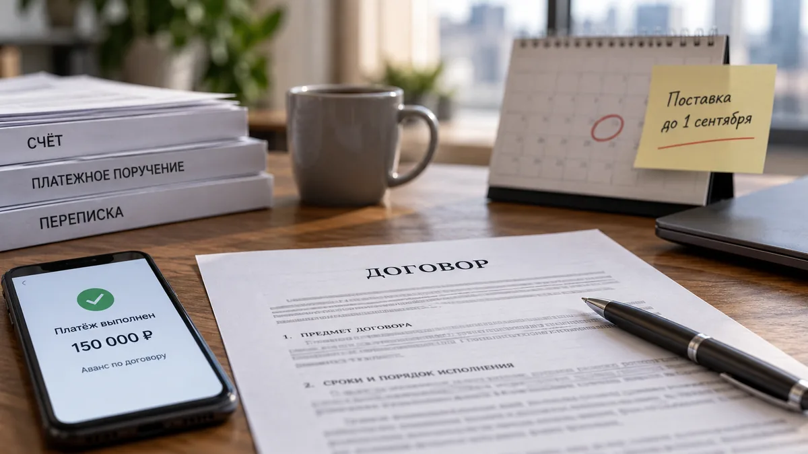

Возврат денег
Возврат предоплаты по договору
Вы перечислили аванс или предоплату по договору, но сделка не состоялась, работа не началась, товар не поставили или другая сторона отказалась выполнять договорённость.
Главный вопрос здесь не только в том, что деньги были уплачены. Нужно понять, за что именно вносилась предоплата, что успела сделать вторая сторона и есть ли у неё основания удерживать часть суммы.
Загрузите договор, счёт, подтверждение оплаты, переписку и документы по исполнению. Сервис бесплатно разработает черновик требования или претензии о возврате предоплаты по вашей ситуации.
План бесплатно · готовый текст — 390 ₽
Предоплату внесли, а договор не исполнили
Ситуации бывают разными.
Поставщик получил аванс, но не отгрузил товар.
Исполнитель получил предоплату и не начал работу.
Арендодатель взял обеспечительный платёж, но договор так и не был заключён.
Подрядчик приступил к работе, но выполнил только небольшую часть.
В переписке всё выглядит просто:
«Мы отказались от сделки. Верните предоплату».
Но для официального требования этого мало.
Нужно понять: за что внесли деньги → что должна была сделать вторая сторона → что она сделала фактически → почему договор не исполнен → какую сумму вы требуете вернуть.
Например, внесли 150 000 ₽ аванса за оборудование
Компания заключила договор поставки оборудования и перечислила поставщику аванс 150 000 ₽.
По договору оборудование должны были поставить до 1 сентября.
Срок прошёл. Поставщик сначала сообщил о задержке, затем предложил перенести поставку ещё на месяц.
Покупатель отказался ждать и потребовал вернуть аванс.
Поставщик ответил, что уже понёс расходы по заказу оборудования и поэтому всю сумму вернуть не может.
В такой ситуации недостаточно написать:
«Срок нарушен, верните 150 000 ₽».
Сначала нужно проверить:
- что написано в договоре о сроке поставки;
- является ли аванс возвратным;
- есть ли условия об отказе от договора;
- подтверждены ли расходы поставщика;
- были ли дополнительные соглашения о переносе срока;
- принимал ли покупатель часть товара;
- какую именно сумму поставщик хочет удержать и почему.
Только после этого можно понять, какое требование формулировать.
Аванс, предоплата и задаток — не одно и то же

В переписке эти слова часто используют как взаимозаменяемые.
Но для возврата денег важно смотреть не только назначение платежа.
Например, в договоре сумма может называться «задатком», но сама конструкция договора и переписка показывают, что стороны фактически имели в виду обычную предоплату.
И наоборот, специальное соглашение может прямо устанавливать последствия отказа от сделки.
Поэтому сервис не делает вывод только по слову в назначении платежа.
Он смотрит: что написано в договоре → как сформулировано назначение платежа → что происходило после оплаты → какие обязательства фактически исполнили.
«Назначение платежа важно, но само по себе оно не решает спор. Сначала нужно посмотреть договор и фактические действия сторон.»
Когда можно требовать всю предоплату
Самая простая ситуация — когда вторая сторона вообще ничего не исполнила.
Например:
- товар не поставлен;
- работа не начата;
- услуга не оказана;
- результат не передан;
- договор расторгнут до начала исполнения.
Тогда требование о полном возврате выглядит логичнее.
Но даже здесь нужно проверить договор.
В нём могут быть условия о расходах, подготовительных работах, бронировании, закупке материалов или других действиях, которые вторая сторона считает основанием для удержания части суммы.
Важно не соглашаться с таким удержанием автоматически, но и не игнорировать его.
Нужно проверить, подтверждаются ли эти расходы документами и связаны ли они именно с вашим договором.
Когда спор идёт уже не о возврате, а о сумме
Сложнее, если часть обязательств выполнена.
Например, подрядчик получил предоплату 200 000 ₽.
До расторжения договора он успел:
- подготовить проект;
- закупить часть материалов;
- выполнить первый этап работ.
Заказчик требует вернуть все 200 000 ₽.
Подрядчик считает, что должен вернуть только 80 000 ₽.
Тогда главный вопрос: какая часть предоплаты действительно относится к невыполненным обязательствам.
Для этого нужно проанализировать:
согласованный объём → фактически выполненный объём → принятый результат → подтверждённые расходы → уплаченную сумму.
Фраза «ничего толком не сделали» для документа слишком расплывчата.
Нужно показать это через факты.
Что особенно важно приложить
Для возврата предоплаты полезно собрать:
- договор и приложения;
- счёт;
- платёжное поручение, чек или выписку;
- техническое задание;
- график работ или поставки;
- переписку о сроках;
- уведомления о переносе;
- акты;
- накладные;
- документы о частичном исполнении;
- переписку о расторжении договора;
- ответ второй стороны на требование вернуть деньги.
Если другая сторона пишет: «Мы уже понесли расходы», проверьте, есть ли документы, которые эти расходы подтверждают.
Если договор расторгли по вашей инициативе
Сам по себе отказ от договора ещё не означает, что предоплата автоматически теряется.
Нужно смотреть:
- почему вы отказались;
- успела ли другая сторона что-то выполнить;
- есть ли в договоре условия о расторжении;
- какие расходы уже понесены;
- можно ли связать эти расходы именно с вашим заказом.
Например, если исполнитель ничего не сделал, но заявляет, что «предоплата невозвратная», одной такой фразы в переписке может быть недостаточно.
А если для вашего заказа уже куплены индивидуальные материалы, ситуация будет сложнее.
Поэтому сервис сначала разбирает факты, а уже потом формулирует требование.
Если вторая сторона говорит: «Аванс не возвращается»
Не спорьте с формулировкой.
Попросите показать, на чём она основана.
Проверьте:
- где это написано в договоре;
- согласовывали ли вы это условие;
- какие обязательства уже исполнены;
- какие расходы фактически понесены;
- есть ли документы;
- соответствует ли размер удержания фактическим расходам.
Иногда «невозвратный аванс» существует только в сообщении менеджера после возникновения конфликта.
А иногда такое условие действительно есть в договоре.
Это две разные ситуации.
Требование или претензия
Если вторая сторона признаёт обязанность вернуть деньги, но затягивает платёж, можно начать с требования о возврате предоплаты.
Если она:
- отказывается возвращать деньги;
- ссылается на удержания;
- считает договор исполненным;
- оспаривает размер суммы;
- игнорирует предыдущие обращения.
Лучше готовить претензию.
Сервис сначала смотрит на документы и ситуацию, а не заставляет вас заранее выбирать форму документа.
Что сервис покажет бесплатно
Опишите ситуацию обычными словами.
«Заплатили 150 000 ₽ аванса за оборудование. Срок поставки прошёл. Поставщик просит подождать ещё месяц. Мы хотим отказаться и вернуть деньги».
Приложите договор, платёж и переписку.
Сервис разработает черновик будущего документа и покажет:
- на какие факты лучше опереться;
- что подтверждается документами;
- есть ли противоречия;
- какие данные нужно уточнить;
- можно ли требовать всю сумму;
- какие удержания заявляет вторая сторона;
- как сформулировать требование;
- какие документы приложить.
После этого можно перейти к полному тексту.
Перед отправкой
Проверьте цепочку:
что оплатили → сколько внесли → что должна была сделать вторая сторона → что выполнено → почему договор прекращён → какую сумму требуете вернуть → почему именно эту сумму.
Отдельно проверьте:
- даты;
- номер договора;
- назначение платежа;
- реквизиты сторон;
- срок возврата;
- банковские реквизиты;
- приложения.
Сервис помогает подготовить проект документа, но не заменяет юридическую консультацию. Для крупной суммы, сложного расторжения, строительного подряда, недвижимости или специального регулирования может потребоваться профильный специалист.
Если задача немного другая
Частые вопросы
Можно вернуть предоплату, если договор уже подписан?
Да. Сам факт подписания договора не означает, что деньги нельзя вернуть. Нужно смотреть условия договора, исполнение обязательств и причину прекращения сделки.
Если в договоре написано «предоплата не возвращается», деньги уже потеряны?
Не обязательно. Нужно проверить формулировку условия, обстоятельства расторжения, фактически выполненные действия и подтверждённые расходы второй стороны.
Можно вернуть аванс частично?
Да. Если часть обязательств уже исполнена, спор может идти именно о размере суммы, которую нужно вернуть.
Что делать, если другая сторона ссылается на расходы?
Попросите подтвердить их документами. Важно понять, действительно ли расходы понесены и связаны ли они с вашим договором.
Нужна ли претензия перед судом?
Это зависит от договора, типа отношений и требований. Сначала стоит проверить сам договор и применимый порядок урегулирования спора.
Возврат денег